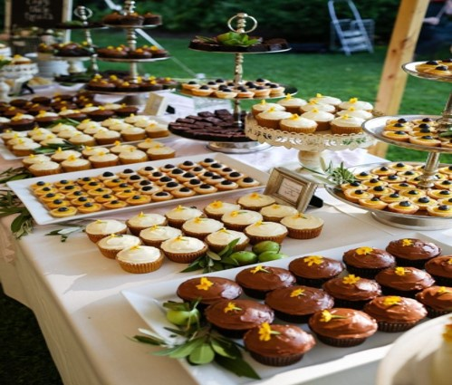

The Africanacity Hotel's world-class conference center and breathtaking views of the Nairobi
skyline make it an invigorating and beautiful location for outstanding meetings and gatherings.
Selection from cutting-edge boardrooms and meeting rooms, serene garden terraces, or the spectacular
Ballroom Suite.
For sales meetings, seminars, product demonstrations, and banquets, our meeting rooms are suitable
sites. Our team of seasoned event specialists and our concierge will attend to every detail to make
sure nothing is missed. Whether it's a small VIP event or a 250-person product launch, you and your
guests will experience a memorable gathering.
Discover More
DINNING
At The Africanacity Hotel one of our top priorities are to ensure that we enhance our
guest’s taste buds with the best mouth watering African cuisines dishes that will leave them
wanting more and with a story to tell.
We have the Kinshasa restaurant, Bambara pool bar and lounge.
Discover More

About Us
Experience a haven of elegance and calm hidden among lush gardens at the heart of Nairobi city, away
from the hustle and bustle of Kenya's most international city. Our five-star hotel in Nairobi combines
work and play, culture and cuisine, five-star design and service, and a place that you can call home
away from home.